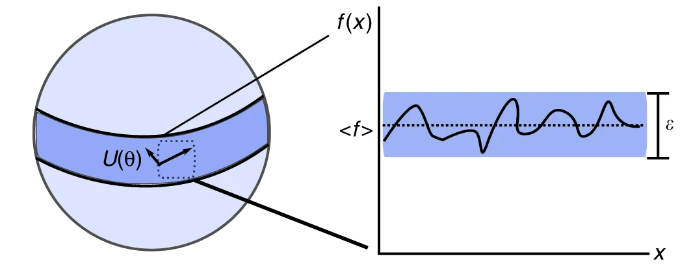
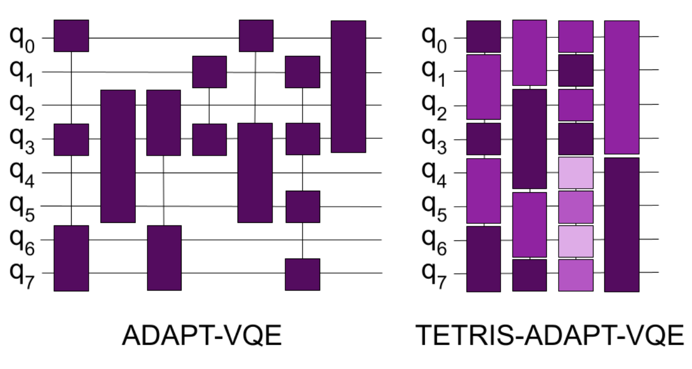
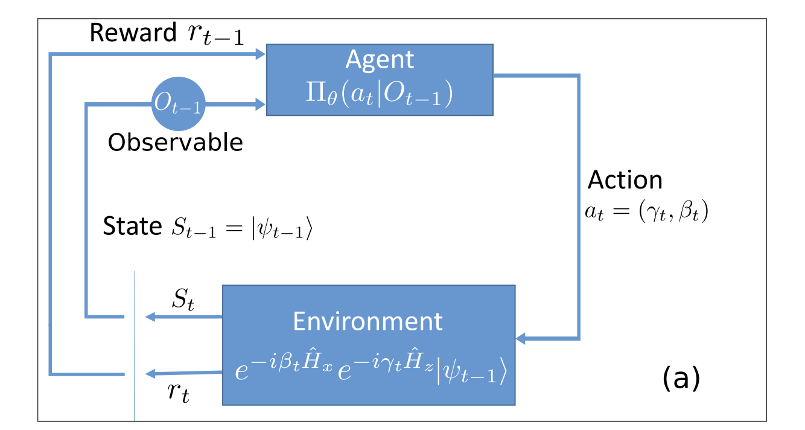
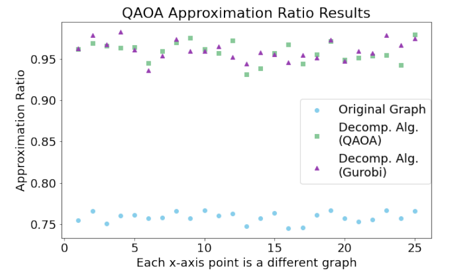

Final remarks
Even though both techniques(VQE and QAOA) are quite recent, most of the community adopted them due to the limitations existing hardware had. These techniques, thanks to the variational approach, allowed for shallower circuits to be implemented and improve upon full length algorithms at the cost of running several iterations until the optimization routine finishes.
The adoption of these techniques lead to new problems as well. Similar to Neural Networks, challenges when scaling the training of those techniques at larger sizes came in the shape of barren-plateus (McClean et al. 2018), regions in the solution space where gradient based approaches cannot be provided with a direction in which the problem could be optimized. This also renders on a high-locality in certain instances that may make our variational training fall into local minima without the ability to get out of those.

That is why, if possible, global optimization techniques are recommended to be used so that certain global exploratory activity is also present while local optimization is done over the solution surface.
VQE alternatives
Hardware efficient ansatz is one of those device-aware techniques that tries to minimize the overhead when going from the theoretical representation to the practical implementation (Leone et al. 2024). By already considering the device topology, one can design an ansatz that is suited to the device more than the problem itself.
Adapt-VQE (Grimsley et al. 2019) is modification of the VQE algorithm making use of a pool of operators. It evaluates their contribution on finding the lowest energy state (ground state) by measuring the gradients (or contribution). The trick here is that the ansatz keeps changing from iteration to iteration looking for a specific set of operators that benefits the convergence towards the ground state. A simple example on how to use it in Qiskit can be found https://qiskit.org/ecosystem/nature/howtos/adapt_vqe.html

Tetris-VQE (Anastasiou et al. 2024) defines an even more complex setup built on top of previous method. By growing the ansatz evaluating the gradient but also accounting for the free space available in the remaining qubits, Tetris-VQE generated ansatz tend to be much more compact than Adapt-VQE ones.
QAOA
Like VQE, QAOA has been put to a test and several improvements have been propose to tackle detected inefficiencies or simply try to boost its performance.
Warm-Started QAOA (Egger, Mareček, and Woerner 2021) proposes classically solving the relaxed version fo the problem so that it is used to warm-start the problem (replacing our initial state towards the one of the relaxed solution). An interesting guide can be found here https://qiskit.org/ecosystem/optimization/tutorials/10_warm_start_qaoa.html.
By following a Reinforcement learning approach one can try to find the optimal policy by which ideal parameters can be proposed a priori avoiding any gradient based approach that may lead to localized solutions (Wauters et al. 2020). On the bad side of this approach, reinforcement learning requires quite some computing time to try-fail-learn the ideal parameters to be used.

Tackling large problems
So far, we were able to tackle small-ish problems, we could tackle larger problems of course but there is certain limitations due to the number of qubits available in the devices (in the range of 127-156 for IBM, for example).
The main challenge will come from the hardware implementation and availability of devices capable of mapping the problem to their actual chip architecture. In most cases we have talked about interacting terms between all qubits in our system but in fact, depending on the device we use to solve our problem, we might find not all qubits are connected between them. This is the common case for most of the superconducting chips. That forces us to find ways around those limitations when pairing our problem to specific hardware.
But we could also find ways to decompose the problem, make it smaller in some sense and enable the usage of smaller devices to tackle large problems. then, could those problems also be solved by classical solvers? Given the size is smaller they could also benefit from that. Some interesting results have already shown the competence of these algorithms in comparison with state-of-the-art classical solvers (Ponce et al. 2025).

In general, the systems we often work with have a hard limitation on how big our problems can be. Some options have appeared but classical solvers can also handle pretty well small size problems so we may find there is no huge gain in many cases. Nevertheless, we will explore what can be done.